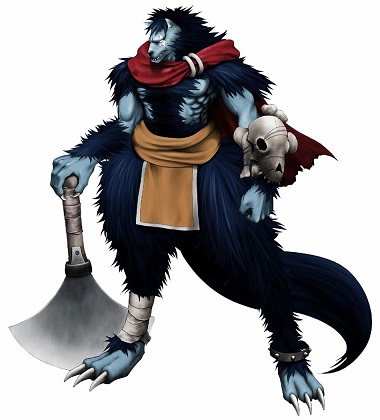

Les Lupins
Originaires du continent de Ragnoth, ils vivent en meute avec un mâle ou une femelle Alpha. Tous les membres de la meute doivent obéir à l'Alpha ou est alors banni de la meute. Se retrouver banni est une honte pour un lupin, il cherchera généralement à intégrer une nouvelle meute ou à constituer la sienne. Ils sont très réticents à l'idée de vivre à côté des humains car pour eux, il s'agît de garde-manger sur pattes.

Durant le grand conflit et maintenant
Lors de la guerre entre les deimos et les humains, il y a eu des embuscades et des petites croisades sanglantes entre les meutes et les garde-manger. Il arrive que certaines meutes ne respectent pas la paix fragile actuelle et continuent leurs activités, ces meutes sont souvent recherchées par ailleurs.
Des loups bipèdes impressionnants
Les lupins ressemblent à des grands loups qui se tiennent debout sur leurs pattes arrières. Leur pelage va du blanc jusqu'au noir en passant par le gris ou le bleu foncé. Ils ont un instinct de traqueur très prononcé. Leurs griffes acérées les rendent dangereux et pour pouvoir utiliser une arme humaine, elle doit souvent être modifiée pour correspondre. Ils mesurent en moyenne entre 2,10 et 2,40 mètres à l'âge adulte pour environ 100 à 150 kg.
Noms lupins
Les deimos ne possèdent pas de nom de famille, cela ne fait pas partie de leur culture. (les noms liés au sang, la chasse et la violence marchent plutôt bien)
Noms masculins : Volk (présent dans le jeu), Mov, Tok, Kod, Kerr.
Noms féminins : Aima, Kynigi, Via, Koy, Hesh.
Traits
Augmentation de caractéristiques. Votre Force augmente de 2 et votre Sagesse de 1.
Âge. Un lupin atteint l'âge adulte à 6 ans et a une longévité de 50 ans environ.
Alignement. Ils sont loyal envers leur meute en dehors de ça ils tendent à être relativement neutre.
Taille. Les lupins mesurent en moyenne entre 2,10 et 2,40 mètres de haut, pour un poids variant entre 100 et 150 kg. Votre taille est Moyenne.
Vitesse. Votre vitesse de base est 9 mètres.
Sans armure. Les lupins ne supportent pas de mettre une armure, ils n'en portent jamais, ils possèdent donc la capacité « Défense sans armure » qui leur permet d'avoir une CA équivalente à 10 + modificateur de Constitution + modificateur de Dextérité.
Griffe et crocs. Vous maîtrisez vos armes naturelles, lesquelles infligent 1d4 de dégâts tranchants pour les griffes et 1d4 perforants pour les crocs.
Traqueur. Vous maîtrisez la compétence Survie.
Langues. Vous pouvez parler, lire et écrire le commun et le lupin.
Capacités magiques
| Niveau personnage | Niveau des sorts | Sorts | - Emplacements de sorts - | |||||||
| 1 | 2 | 3 | 4 | 5 | 6 | 7 | 8 | |||
| 1 | 1 | Colonne d'eau, Champ défensif | 1 | |||||||
| 3 | 2 | Détournement, Ralentissement | 2 | 1 | ||||||
| 5 | 3 | Cri de rage | 2 | 1 | 1 | |||||
| 7 | 4 | Blizzard, Vent destructeur | 3 | 2 | 1 | 1 | ||||
| 9 | 5 | Stalactites | 3 | 2 | 2 | 1 | 1 | |||
| 11 | 6 | Force mentale, Célérité | 3 | 3 | 2 | 2 | 1 | 1 | ||
| 13 | 7 | Pluie de pierres | 4 | 3 | 3 | 2 | 2 | 1 | 1 | |
| 15 | 8 | Lance de glace | 4 | 3 | 3 | 3 | 2 | 1 | 1 | 1 |
Liés à la glace. Les lupins sont capables d'utiliser des emplacements de sorts supérieurs à celui du niveau du sort pour augmenter l'efficacité de ses sorts de glace (+1 de dégâts / par niveau d'emplacement de sort) ce qui augmente le coût en pierres des esprits de 2/niveau de sort supplémentaire.
Par exemple le sort colonne d'eau est un sort de niveau 1 qui tape à 3d6 et coûte 12 pierres des esprits. S'il est utilisé avec un emplacement de sort de niveau 2 il fera 4d6 pour un coût de 14 pierres des esprits.
Connexion à la magie. Ils sont également capable d'utiliser des emplacements de sorts supérieurs à celui du niveau du sort pour augmenter l'efficacité de sorts des autres éléments connus mais pour un prix de 3 pierres des esprits par niveau d'emplacement de sort supplémentaire.